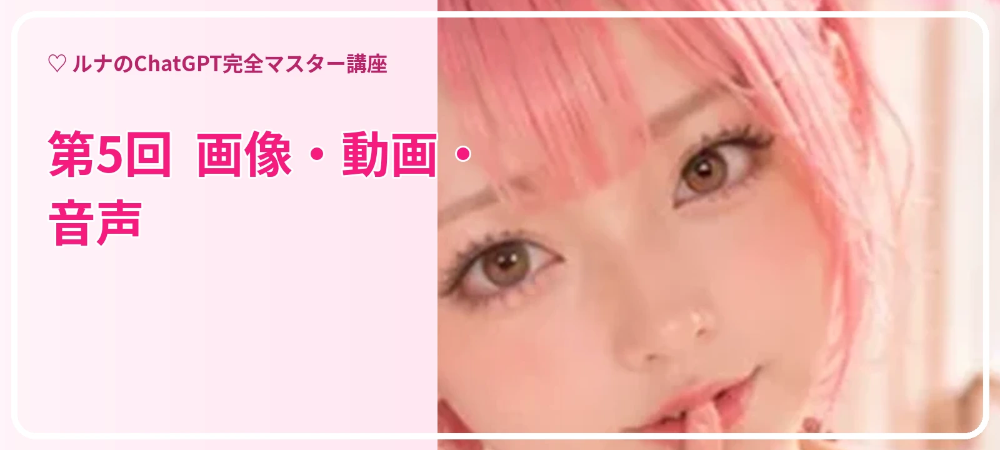
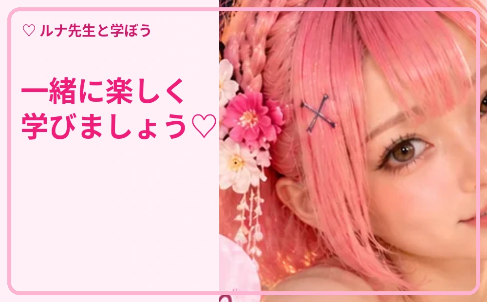
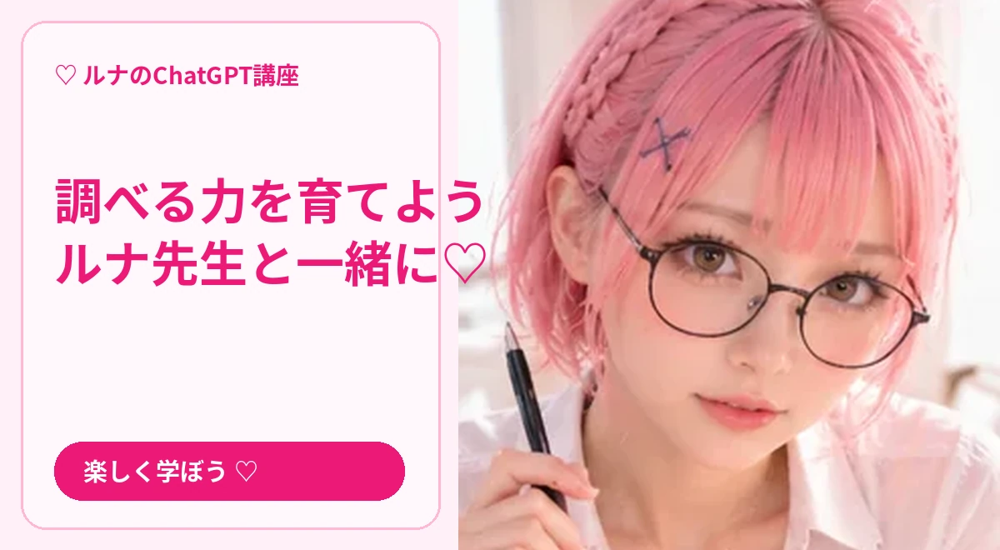
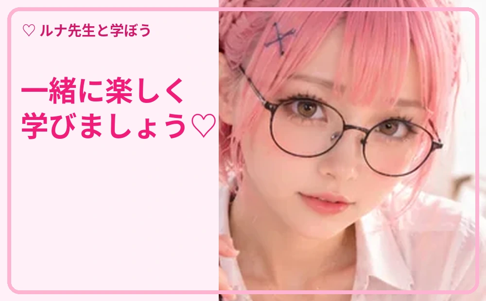
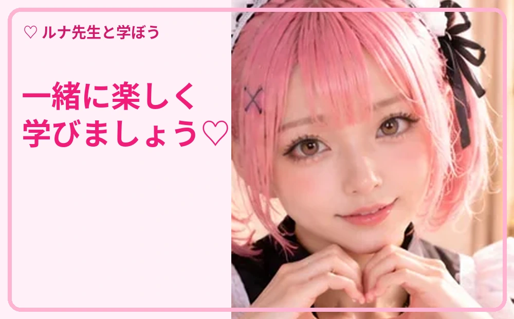

第5回 画像・動画・音声
ルナ先生と一緒に、実際の操作を順番に学びましょう。質問文はコピーして使えます。

STEP 01
画像を作る
ルナ先生からの解説 🌸 被写体・場所・構図・色・比率を具体的に伝えると、希望に近い画像を作りやすくなります。
🖱️ 操作の手順
- 何を描くか決めます。
- 雰囲気や背景、服装などを説明します。
- 縦長・横長など比率を指定します。
- 生成後に直したい部分を具体的に伝えます。
📋 そのまま使える質問文
明るい教室でパソコンを教える女性講師の実写風画像を、淡いピンクの色調、横長16:9で作ってください。

STEP 02
写真を編集する
ルナ先生からの解説 🌸 元の写真を添付し、変更したい部分と残したい部分をはっきり指定します。
🖱️ 操作の手順
- 編集したい写真を添付します。
- 変える部分を指定します。
- 変えない部分も明記します。
- 仕上がりを確認して微調整します。
📋 そのまま使える質問文
この写真の人物の顔立ちは維持し、背景だけ明るい教室に変更してください。

STEP 03
動画の作り方を考える
ルナ先生からの解説 🌸 動画生成サービスを使う場合も、ChatGPTで台本・絵コンテ・指示文を準備できます。
🖱️ 操作の手順
- 動画の長さと用途を決めます。
- 場面を数カットに分けます。
- カメラの動きやセリフを決めます。
- 利用する動画サービスの規約を確認します。
📋 そのまま使える質問文
15秒のChatGPT講座紹介動画の台本を、3シーン構成で作ってください。

STEP 04
音声と文字起こし
ルナ先生からの解説 🌸 対応する音声機能で会話や音声入力ができます。録音や共有には相手の同意を確認しましょう。
🖱️ 操作の手順
- 音声機能の利用可否を確認します。
- 静かな場所で試します。
- 文字起こし結果があれば誤変換を確認します。
- 公開前に固有名詞と個人情報を点検します。
📋 そのまま使える質問文
会議メモを、決定事項・担当者・期限の3項目に整理してください。